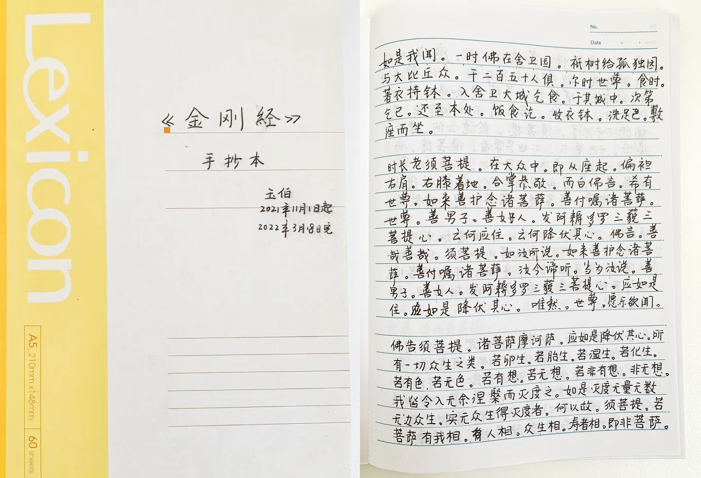

- 00 开篇词 蚂蚁集团玉伯：人生不设限.md.html
- 01 从页面仔到工程师，前端到底在发挥什么价值.md.html
- 02 何为体验：把简单留给用户，也把简单留给自己.md.html
- 03 终端技术：浅谈小程序与客户端的发展.md.html
- 04 开源三大收获：异步协同、文档优先与快乐工作.md.html
- 05 蚂蚁内部开源：迈出第一步，但还有很长路要走.md.html
- 06 从淘宝到支付宝：几次项目失利，但创新产品之心未死.md.html
- 07 产品故事：语雀两度生死局.md.html
- 08 产品经理能力进阶：用户洞察、抽象设计到看到远方.md.html
- 09 个人成长关键词一：全情投入.md.html
- 10 个人成长关键词二：守正出奇.md.html
- 11 个人成长关键词三：愿等花开.md.html
- 12 作为创新产品聚集地，体验技术部成长土壤从何来.md.html
- 13 行业内口碑第一的前端团队，如何打造文化.md.html
- 14 管理能力提升：曾经影响过的书籍和启发过我的人.md.html
- 15 从浆手、掌舵人到兜底人，管理者进阶的三阶段.md.html
- 结束语 我想聊的一些与技术无关的话.md.html
- 捐赠
09 个人成长关键词一：全情投入
玉伯曾经做过一个分享，名字叫《我的前端成长之路》，这个分享是在回答一个问题，11年里，对自己的成长来说，最关键的是什么？他自己总结了三个关键词：全情投入、守正出奇、愿等花开，针对这三个关键词，我们和玉伯进行了更深入的沟通。如今，全情投入是目前对他来说更重要的关键词。

极客时间：想请你聊聊技术人成长的话题，你之前在内部的分享中提到三个成长的关键词：全情投入，守正出奇，愿等花开。现在这三个词对你来说依然很重要吗？有没有什么变化？
玉伯：这三个词是我几年前的总结，对我自己的影响也蛮大。现在来看，会觉得全情投入是最重要的。无论工作在什么阶段，都需要全情投入。
很多时候，会想不清楚自己想要什么，或很容易想得太大。要谨慎去想人生价值、人生意义这种非常大的话题，想多了容易陷入虚无主义。我的经验是，关注具体的目标，关注短中期的目标，做到全情投入，忙起来，人会更容易快乐。
极客时间：忙起来还分这个工作是不是自己喜欢的，如果能忙自己感兴趣的事情，会不会更好，这是必要的吗？
玉伯：我觉得不是必要的。很多人想不清楚自己究竟喜欢什么。很早就想清楚自己喜欢什么，是可遇不可求的。更多时候，需要具体投入到某件事，做到一定阶段，才能确认自己喜不喜欢。
打个比方，作为文字工作者，写文章是日常，刚开始写的时候往往很痛苦，会以为自己不喜欢。但是坚持写下去，写着写着，有更多读者看的时候，或者当自己达到某种心流状态（写东西时不是脑子指挥笔，而是能感受到笔指挥脑袋的状态）时，往往就会喜欢上写作。跑步也类似。
很多人总说找自己喜欢的事情做，我觉得有两种逻辑，要看是爱一行干一行，还是干一行爱一行。爱一行干一行，干的就是自己爱的，这是运气爆棚。先干一行，干起来，在干的过程中去确定自己是不是喜欢，或者开始喜欢上或讨厌上，这有更大的可行性。
极客时间：如果我们最开始选定做某一个事情，某个方向的工作，那就先抛却杂念，全心投入进去，慢慢再去寻找吧。
玉伯：与其选来选去，不如全情投入一件事情。因为一旦开始选择，就会有苦恼。天天想着寻找喜欢的，就会有失落，怕自己找不到，最终结果可能 99.99% 的概率的确找不到。
极客时间：那你觉得你有寻找的过程么，不管是做技术，还是做产品，你寻找到了感兴趣的方向了吗？
玉伯：我最终找到的方向，不是做产品或做技术这种分类方式，而是换了一种视角去看问题，会去看所做事情的价值在哪，这个价值会让我觉得活着有意义，这是一种经历过后被赋予的意义。
很多事情要经历过后，才能通过自己或他人去赋予意义。比如，早期我在折腾开源项目时，天天干到两三点，经常腰酸背疼，虽然写了很多很多开源代码，但当时工作和生活状态都不是太好。我昨天讲述这些事时，你可能觉得我当时是觉得很有价值很有意义的，其实并不是。意义是在过了好几年后，回头看时，才发现那段时光，虽苦但很有意义。
往大了说，经历过万里长征的人一定在过程中天天骂娘，你只有熬到了延安，新中国成立，再回头看长征过程，才觉得自己太牛了。万里长征、红军四渡赤水，都是非常有意义的，但这些意义都是后面才赋予的。
所以我最喜欢的还是全情投入，当下要做什么样的事情，就把自己的全部精力投进去，不去想做完之后能够得到什么，能有什么意义。全情投入其实特别难，要把所有的杂念都去掉。
极客时间：那怎么才能跨越这个难点，跨越这个坎儿，然后全情投入进去呢？这是非常理想化的情况，而且我觉得现代人的困境特别是年轻人的困境是很明确的，如果不想自己能获得什么，不想怎么利益最大化而只沉心做一件事好难。
玉伯：现代年轻人挺有意思，我刻意观察过。他们特别容易全情投入，同时也特别不容易全情投入。
比如出去团建，打王者荣耀，很多同学会很享受，打游戏时非常全情投入。同时仔细观察，会发现也有部分同学虽然在打游戏，但有些勉强，眼神是飘忽的。
换一个场景，有些同学写代码时能心无旁骛，但如果去参加 PRD 评审，经常会默默坐在角落里，不太说话，不怎么融入。
全情投入并不是一种态度，而是一种能力。比如能全情投入写代码的同学，为什么参加会议时无法做到全情投入？往往是因为这位同学比较内向，不敢沟通，心有害怕，在会议时想全情投入也很难做到。
这需要提升自己的能力，比如当你面前不管站的是谁，你都不担心自己说错话，都敢于表达自己，能克服内心的恐惧，具备这种心态调节能力后，才能做到全情投入。
提升能力，方能全情投入，打游戏也需要达到一定能力后，才能进入全情投入的心流。这是一个过程，关键点还是能力提升。
极客时间：上面是在说在工作中的全情投入，那么在个人的成长中呢，你怎么全情投入？你也提到有早课的习惯，早上会有个固定学习的时间，现在还有吗？
玉伯：我现在还保持着日课习惯。除了日课，还给自己增加了早课和晨课。日课、早课、晨课，是我的一日三课，这是我自己一直在坚持的小习惯。
日课是干嘛的呢？日课时间很短，只花 5-10 分钟抄一些东西。前不久我在抄《金刚经》，让自己每天开始有一种仪式感，向先哲致敬，我花了大概四个月把《金刚经》抄完了。日课我只定时不定量。只定时是指，我到了公司后，前 5-10 分钟就用来抄经，抄多少不做任何限制，时间到了我就结束。这样会无压力，使得能坚持很长时间，成为习惯。
早课是训练自己写作的能力，让自己的写作能力得到不断地刻意训练。工作日，会想办法给自己留出一个小时去写点东西。我会逼着自己在一周里面的写作练习不少于两次，现在能做到一周写 3-4 篇文章。
比如说我前天写的主题是如何沟通，会把《非暴力沟通》等经典书籍再翻一翻，同时结合实践，总结一些心得写下来。昨天写的是“什么是幸福”，是一种意识流的东西，会刻意去捕捉脑海里对幸福的思绪，比如“幸福就是好的变化”。
晨课就是一日之计在于晨。晨课很简单，每天早上会花 15 分钟左右去规划今天具体干什么。比如去参加哪些会议，要完成哪几件事等具体日程安排。
一日三课，这是我每天的微习惯。

极客时间：你前面讲的这些，其实感觉是有点活在当下的理念。
玉伯：全情投入就是活在当下。
对活在当下的感触，很大程度来自对日课的坚持。每天5-10分钟的日课，让我这几年抄完了《论语》《道德经》《庄子》《孙子兵法》《金刚经》，最近在抄《楞严经》。
抄的时候是不求甚解的，仅仅是抄，感受文字本身。很多文字到现在我也不知道在讲什么，但是当我反复抄时，过程中开始不断有新感悟。比如佛学里谈及的我相、人相、众生相，我之前不太理解，在抄《金刚经》时，反复出现这几个词，现在再看到这几词时，就特别熟悉，像是老朋友，觉得一切是明明白白的。
日课我只定时不定量，时间到了我就结束，只要是这个时间段，我只干这个事情。这种体验，完全没有压力，同时会有惊喜，比如会发现原来每天抄 5-10 分钟，3 个多月居然可以把《金刚经》抄完。这类经历，也会让自己真正理解“滴水石穿”、“功不唐捐”、“日拱一卒”是什么意思。以前只是认识了这些成语，现在通过经历真正感受过后，会有种敬畏感。
极客时间：为什么会想做三课这个事情？
玉伯：这是受一本书的影响，叫做《微习惯》，每天一个微小行为，能生成巨大的力量。这本书讲的是，很多时候人的行为，包括思维，都是由一些微小习惯组成的。
日课是受《刻意练习》和《微习惯》这两本书影响，我是拿自己做实验，看到底坚持下来会怎么样。最早写日课是 2019 年，选择了定时抄书来实践，现在很感激自己的这个实验，让自己养成了日课的习惯，收获非常多。
小结时刻
人唯一的财富就是自己的时间，要对自己的时间负责。最好的时间管理，就是全情投入。
最后，留个小问题，你在日常生活中有什么持续坚持的小习惯么？欢迎在评论区分享，我们下一讲见！
延伸阅读
© 2019 - 2023 Liangliang Lee. Powered by gin and hexo-theme-book.